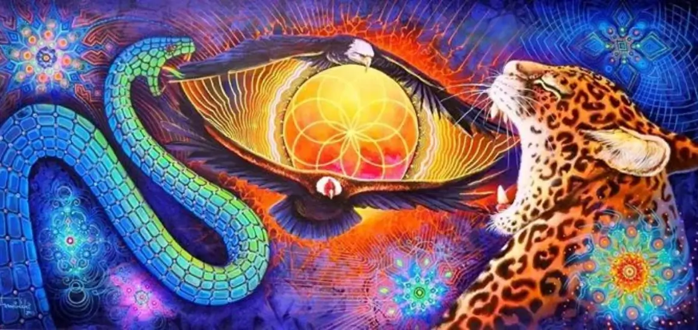

Limpieza y Sahumo


Todas las relaciones, interacciones o espacios emiten una frecuencia y tu campo
energético interactúa con todo esto, recibiendo y entregando información.
La protección energética ayuda a cuidar la energía que esta alrededor de uno, para
así mantenerla vibrando alto y lo más limpia posible.
Todos tenemos energía negativa y lo que sanamos son nuestras Elecciones
Yoga


El objetivo esencial del yoga es la reunificación del ser con el Todo y el acceso a la conciencia suprema que nos lleva a la iluminación. Para ello, se proponen una serie de posturas, llamadas asanas, que se combinan con la práctica de ejercicios de respiración, llamados pranayama para así lograr un estado de meditación
Reiki


Reiki es una técnica de canalización y transmisión de energía vital a través de la imposición de manos, que se utiliza para obtener paz y equilibrio en todos los niveles: físico, mental, emocional y espiritual. Es decir: armoniza y equilibra los chakras de tu cuerpo
Munay Ki



Basado en las prácticas iniciáticas de los chamanes de los Andes y el Amazonas, los Munay-Ki son nueve ritos de iniciación para convertirse en una persona de sabiduría y poder. Son transmisiones energéticas que curan las heridas del pasado: la herencia genética y kármica con la que nacemos